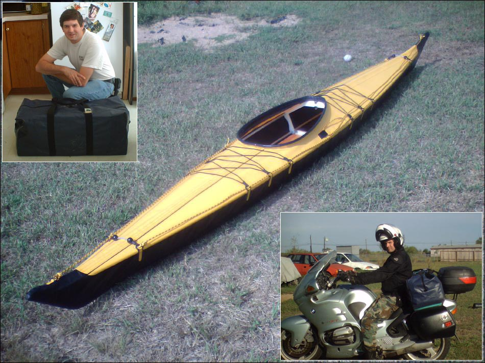

| Sea Otter-R by Brian Lippincott (US) | Menu Last Page Next Page |
|

Brian, from Austin, Texas has just completed a Sea Otter-R folder. To transport the kayak on his BMW, Brian made the take-apart sections 32 inches long to fit in a 32 X 12 X 12 inch travel bag. The bag holds the kayak, 4-piece paddle, PFD, paddle float, bilge pump, two waterproof storage bags, seat pads, two floatation bags, and a small repair kit. The weight including boat, gear, and bag is 44lbs. The boat length is 15.4 ft. Use the {Back} key to return.
|
|